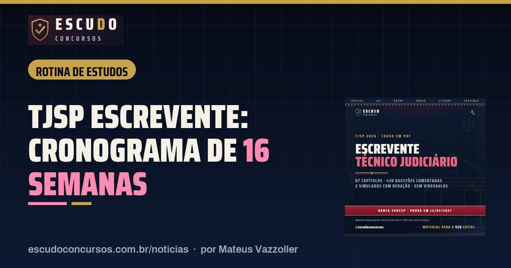

Cronograma de estudos TJSP Escrevente: 16 semanas até a prova de 14/03/2027
Rotina de estudosPublicado em 20 de novembro de 2026 · por Mateus Vazzoller, ESCUDO Concursos

Quem quer trabalhar no cartório de uma das varas do Tribunal de Justiça de São Paulo como Escrevente Técnico Judiciário tem 16 semanas, a partir de segunda-feira, 23/11/2026, até a prova da Vunesp em 14/03/2027, à tarde. As inscrições seguem abertas até 10/12/2026. Este plano reparte 15 horas por semana pelo peso de cada bloco, passa por todas as matérias de Direito até meados de fevereiro, treina uma redação por semana e deixa as últimas quatro semanas para simulado e revisão.
| Cargo | Escrevente Técnico Judiciário do TJSP, cadastro de reserva da 2ª à 10ª RAJ |
|---|---|
| Banca | Fundação Vunesp |
| Inscrições | até 10/12/2026 (boleto até 11/12/2026) |
| Prova | 14/03/2027, à tarde, 5 horas para 70 questões e a redação |
| Tempo até a prova | 16 semanas a partir de 23/11/2026 |
| Carga sugerida | 15 horas por semana |
Como dividir 15 horas por semana?
A conta segue as duas regras que eliminam: acertar ao menos 8 das 16 de Português e 15 das 30 de Direito. Por isso Direito fica com quase metade do tempo e Português com a segunda maior fatia. O Bloco III só classifica, mas soma nota, e Informática é a maior parte dele.
| Disciplina | Questões | Horas por semana |
|---|---|---|
| Conhecimentos em Direito (Bloco II) | 30 | 7h |
| Língua Portuguesa (Bloco I) | 16 | 3h30 |
| Redação | 0 a 40 pontos | 1h30 |
| Informática | 9 | 1h |
| Raciocínio Lógico e Matemática | 7 + 4 | 1h30 |
| Atualidades | 4 | 30 min |
| Total | 70 + redação | 15h |
Semana a semana até a prova
O edital cobra cada lei por artigos determinados, então a ordem abaixo segue os temas do programa de Direito, um ou dois por semana. A legislação interna do TJSP vem depois das matérias clássicas, porque é a parte em que quase nenhum candidato tem base e que depende do recorte exato.
| Semana | Período | Conhecimentos em Direito | Português e redação |
|---|---|---|---|
| 1 | 23/11 a 29/11 | Constitucional: direitos e garantias fundamentais, nacionalidade | Interpretação de textos; leitura de modelos de redação dissertativo-argumentativa |
| 2 | 30/11 a 06/12 | Constitucional: Administração Pública e Poder Judiciário | Coesão; primeira redação com textos de apoio |
| 3 | 07/12 a 13/12 | Penal: crimes contra a fé pública | Morfologia; redação |
| 4 | 14/12 a 20/12 | Penal: crimes contra a Administração Pública | Concordância; redação |
| 5 | 21/12 a 27/12 | Processual Penal: sujeitos do processo, citações e intimações, procedimentos | Semana do Natal: manter ao menos as questões de Português |
| 6 | 28/12 a 03/01 | Processual Penal: Tribunal do Júri, recursos, habeas corpus e Juizado Especial Criminal | Regência; redação |
| 7 | 04/01 a 10/01 | Processual Civil: atos processuais, comunicação dos atos e tutela provisória | Crase; redação |
| 8 | 11/01 a 17/01 | Processual Civil: procedimento comum, sentença e recursos; Juizados Especiais Cíveis e da Fazenda Pública | Pronomes; redação |
| 9 | 18/01 a 24/01 | Administrativo: Estatuto dos Funcionários Públicos Civis do Estado de São Paulo | Pontuação; redação |
| 10 | 25/01 a 31/01 | Administrativo: Lei de Improbidade; Plano de Cargos e Carreiras (Lei Complementar nº 1.111/2010) | Revisão de concordância e regência; redação |
| 11 | 01/02 a 07/02 | Resolução nº 850/2021 (teletrabalho) e Resolução nº 963/2025 (eproc) | Revisão de crase e pontuação; redação |
| 12 | 08/02 a 14/02 | Regimento Interno e Normas de Serviço da Corregedoria Geral da Justiça | Interpretação, só por questões; redação |
| 13 | 15/02 a 21/02 | Revisão de Direito por questões; primeiro simulado | Redação dentro do simulado |
| 14 | 22/02 a 28/02 | Só as matérias em que o simulado foi pior | Reescrever a pior redação |
| 15 | 01/03 a 07/03 | Segundo simulado no fim de semana | Redação dentro do simulado |
| 16 | 08/03 a 14/03 | Revisão leve dos resumos e das questões erradas | Descanso na véspera; prova em 14/03, à tarde |
O Bloco III entra toda semana, em doses pequenas: um tema de Informática por semana, de Windows aos aplicativos do Microsoft 365, uma lista de Raciocínio Lógico e outra de Matemática. Em Atualidades, além do noticiário desde o 1º semestre de 2026, o edital pede os arts. 1º a 13 e 34 a 38 do Estatuto da Pessoa com Deficiência (Lei nº 13.146/2015): reserve a semana 12 para eles. Até a semana 8, metade do tempo é teoria e metade é questão; da semana 13 em diante, não entra conteúdo novo.
Como fazer os simulados das semanas 13 e 15?
- Faça as 70 questões e a redação juntas, de tarde, em 5 horas, como no dia da prova. A redação não tem tempo separado: decida antes em que momento vai escrevê-la.
- Corrija pela régua do edital: pelo menos 8 acertos em Português, 15 em Direito e 35 no total. Quem fica abaixo em qualquer uma delas está eliminado, mesmo com nota alta no Bloco III.
- Conte à parte os acertos de Direito: estão entre os critérios de desempate, e é a nota da objetiva que decide se a redação será corrigida.
- Dê nota à redação pelos três critérios do edital (tema, estrutura e língua) e confira se não houve fuga ao tema nem ao gênero, que zeram a prova.
O curso ESCUDO para Escrevente do TJSP libera o Simulado 2 em 07/03/2027, no fim da semana 15, para servir de último teste antes da revisão final.
Como treinar a redação toda semana?
A redação vale de 0 a 40 e só aprova quem tira 24 (19,2 nas vagas reservadas). Ela não soma pontos na classificação, mas elimina. Use sempre o formato da Vunesp: um tema com textos de apoio e um texto dissertativo-argumentativo. Dois cuidados que o próprio edital aponta: não escrever na primeira pessoa do singular e não citar a coletânea de forma direta, porque as duas coisas podem tirar pontos. Guarde as redações corrigidas e releia a pior delas na semana 14.
E se eu só tiver 8 horas por semana?
Mantenha a ordem das semanas e corte em proporção: Direito 4h, Português 2h, redação 1h e Bloco III 1h. Direito e Português continuam com a maior parte do tempo, porque são os dois blocos que eliminam.
Curso ESCUDO Escrevente Técnico Judiciário do TJSP em PDF: 87 capítulos e 430 questões comentadas, 2 simulados com redação, de acordo com o edital. De R$ 47 por R$ 37 com o cupom TJSP37 até 10/12/2026.
Ver o curso
Perguntas frequentes
Quando é a prova do TJSP para Escrevente?
Em 14/03/2027, à tarde, com 5 horas para as 70 questões objetivas e a redação. O gabarito sai em 17/03/2027.
Qual matéria estudar primeiro para o TJSP?
Conhecimentos em Direito, que tem 30 das 70 questões, exige ao menos 15 acertos e entra no desempate. Português vem logo em seguida, com 16 questões e mínimo de 8 acertos.
Ainda dá tempo de se inscrever no concurso do TJSP?
Sim. As inscrições vão até 10/12/2026, e o boleto da taxa de R$ 81,00 pode ser pago até 11/12/2026.
Leia também
- Rotina de estudosCronograma de estudos PC-PE Agente: 14 semanas até a prova de 07/03/2027
26 de novembro de 2026 · Plano de 14 semanas até a prova do Cebraspe de 07/03/2027 para Agente da PC-PE: 15 horas por semana, Contabilidade cedo e redação toda semana.
- Rotina de estudosCronograma de estudos Policial Penal PE: 16 semanas até a prova de 21/03/2027
25 de novembro de 2026 · Plano de 16 semanas para a prova do Cebraspe de 21/03/2027 para Policial Penal de Pernambuco: 15 horas por semana, Execução Penal primeiro e discursiva semanal.
- Rotina de estudosCronograma Agente Administrativo de Curitiba: 3 semanas até a prova de 13/12/2026
24 de novembro de 2026 · Cronograma de 3 semanas para a prova da FAFIPA de 13/12/2026 para Agente Administrativo de Curitiba: meta de acertos por área, plano semanal e reta final.
Guia completo do concurso: edital, vagas e o que cai · Mais notícias e dicas de concursos